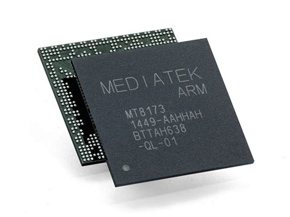

Infotext: (Deutsche Website) Diese Website wurde nur für diese Schularbeit (BK Portfolio) geschrieben. Dadurch dass es sich um eine Website handelt ist hier auch eine Erklärung dabei. Außerdem besteht diese Website aus HTML, CSS und eine wenig Javascript für die Funktionen. Diese Website wurde auf einem Raspberry Pi Zero W geschrieben. Doch warum eine Website? Da ich mein Hobby und BK mischen wollte um was zu machen was anders war. Um die Website weiter anzuschauen bitte auf den Knopf unten drücken. Der Source Code ist hier zufinden.
Hier sieht man einen MITS Altair 8800 man nannte es einen Minicomputer im Jahr 1975. Wenn man jetzt auf den "Neu" Knopf drückt sieht man einen Raspberry Pi Zero auch ein Minicomputer aber, aus dem Jahr 2015
Man sieht den Raspberry Pi Zero im Vergleich zu dem Altair 8800. Man sieht auch dass sich die größe sehr stark unterscheidet aber nicht nur die größe sondern auch die Leistung. Leider hat das Bild was ich von meinem Raspberry Pi Zero geschossen hat ein komisches Format gehabt und wollte sich nicht anpassen.
Raspberry Pi Zero 2015: 1GHz quad-core 64-bit Arm Cortex-A53 CPU 
Altair 8800: Erster 8-Bit Minicomputer basierend auf die Intel 8080 CPU mit 2MHz
Man merkt an den Spezifikationen wie klein und Kompakt die neuen Medien sind im Vergleich zu den etwas älteren. Außerdem zahlt man gerade mal für einen Raspberry Pi Zero um die 15 Euro wofür man früher wie bei dem Altair 8800 um die 100-600 Euro gezahlt hat.
Fun Fact: Große Hersteller wie Samsung, Apple und Google benutzen 64-Bit Arm CPUs für Handys, Tablets, Smartwatches weil, diese klein sind und eine starke Leistung haben. Als Beispiel Apples A14 CPU diese CPU basiert auf die Arm CPUs und sind in dem IPhone 12 sowie im iPhone 12 Pro und iPhone 12 Pro Max
Als ich mir den Raspberry Pi Zero zugelegt habe brauchte ich ein Gehäuse für den Computer. Da ich noch altes Filament übrig hatte und damit nichts anfangen konnte habe ich es einen Freund gegeben der dann das Filament wiederverwertet hat um damit dieses Gehäuse zu drucken.
Bei der Schrift habe ich mich für die altdeutsche Schrift entschieden. Da es für mich schön und nicht so komplex aussah.
Ich habe es versucht mit grau einheitlich zu gestalten, jedoch bin ich mir da nicht sicher ob man da nicht mit verschiedenen Farben arbeiten hätte können.
[Update] Da es wie eine Dokumentation ist kann ich Sachen auch hinzufügen... Da ich mich gefragt habe wie es mit Farbe aussehen würde habe ich ein Teil mit Farbe "belebt".

Hier auf dem Bild sieht man ein Nokia 3310 es kam im Jahre 2000 raus und rechts sieht man iPhone 14 pro das im Jahre 2022 rauskam. Ein unterschied von 22 Jahren.
Beide Handys haben Vor- und Nachteile beim iPhone ist es ganz klar die Leistung beim Nokia ist die Leistung um einiges schwächer doch dadurch das die Leistung schwächer ist es übersichtlich minimal und es gibt keine "Spy Software".